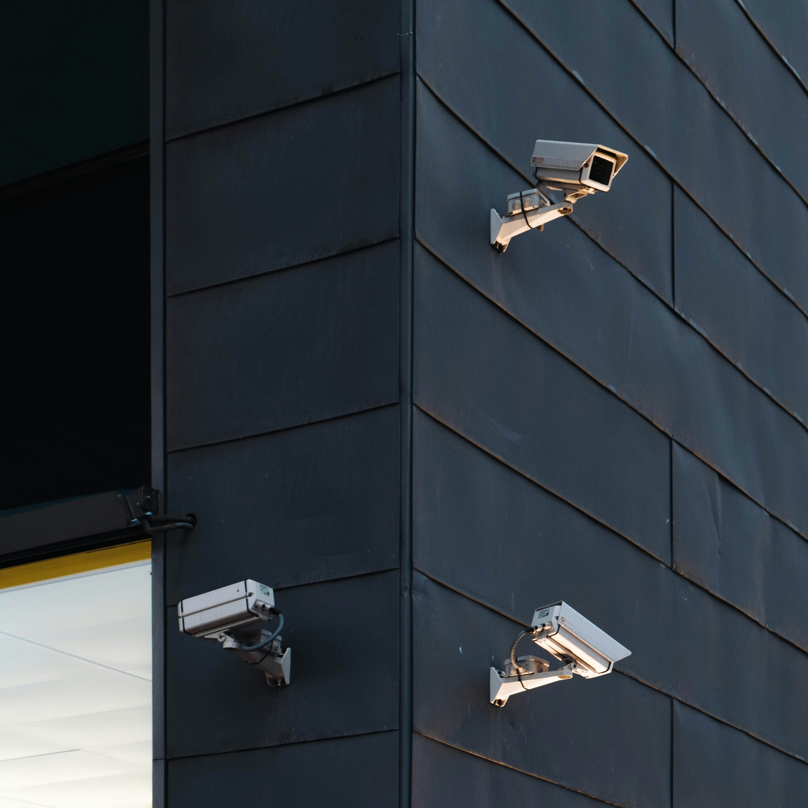
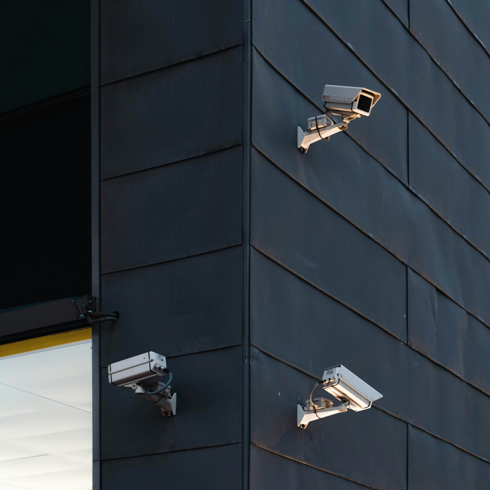

Protect your property with expert CCTV and surveillance system installation. HD & 4K cameras, remote mobile viewing, motion detection, and night vision — installed by certified technicians across BC.
Protect your Kamloops, Langley, or Kelowna property with professional CCTV installation from Penta River Technologies. We provide complete surveillance solutions — from security assessments and camera selection to professional installation and remote access configuration.
 

From assessment to activation, we handle every step to ensure your surveillance system works flawlessly.
Free on-site evaluation to identify vulnerabilities and determine optimal camera placement.
We recommend cameras, storage, and configuration tailored to your property and budget.
Expert mounting, cabling, and configuration with clean, concealed wiring.
Remote viewing configuration, app setup, and a full walkthrough of your new system.
Residential and commercial surveillance installations — keeping your property safe no matter where you are.
CCTV installation for Kamloops homes and businesses. Protect your property with HD surveillance and remote monitoring.
Professional security camera installation in Langley. From retail stores to residential properties, we've got you covered.
Expert CCTV solutions for Kelowna's growing business and residential community. 4K surveillance with smart alerts.
Certified technicians with years of experience in residential and commercial CCTV systems.
View your cameras from anywhere — phone, tablet, or computer. We configure everything for you.
NVR and DVR systems with ample storage. Optional cloud backup for critical footage.
Advanced infrared and color night vision ensures clear footage 24/7, regardless of lighting.
Motion detection with customizable zones sends instant notifications to your devices.
Post-installation maintenance, troubleshooting, and system optimization whenever you need it.
The number of cameras depends on your property size, layout, and security goals. We provide a free on-site security assessment for Kamloops, Langley, and Kelowna businesses to determine the optimal camera count and placement.
Absolutely! All our CCTV systems include remote viewing capabilities. We set up mobile apps so you can monitor your property in real-time from anywhere in the world using your smartphone or tablet.
DVR systems use analog cameras with coaxial cables, while NVR systems use IP cameras connected via Ethernet. NVR systems generally offer higher resolution and more flexibility. We help you choose the best option for your needs and budget.
Yes! We install cameras with advanced infrared night vision and low-light technology. Our 4K cameras capture clear footage day and night, and we also offer color night vision options for enhanced clarity.
Storage duration depends on the number of cameras, resolution, and storage capacity. Typical systems store 14-30 days of footage. We design your system with appropriate storage and can set up cloud backup for critical footage.
Contact us today for a free security assessment. Expert CCTV installation in Kamloops, Langley, and Kelowna.